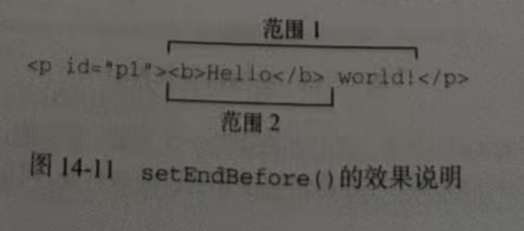

如果有多个范围，则可以使用compareBoundaryPoints()方法确定范围之间是否存在公共的边界(起点或终点)。给两个 Range 的边界‘比位置’：通过指定 “比哪个边界”，判断谁在前、谁在后、是否重合这个方法接收两个参数:要比较的范围和一个常量值，表示比较的方式。这个常量参数包括:
compareBoundarypoints() 方法在第一个范围的边界点位于第二个范围的边界点之前时返回-1, 在两个范围的边界点相等时返回0，在第一个范围的边界点位于第二个范围的边界点之后时返回1。 这里的情况大多数是 起点跟起点比 终点跟终点比 少数情况是起点跟终点比 , 终点跟起点比 来看下面的例子:
Hello world!
let range1 = document.createRange()
let range2 = document.createRange()
let p1 = document.getElementById('p1')
range1.selectNodeContents(p1)
range2.selectNodeContents(p1)
range2.setEndBefore(p1.lastChild) // 把range2 的终点设置为 world!前面
console.log(range1.compareBoundaryPoints(Range.START_TO_START, range2)) // 比较两个范围的起点 0
console.log(range1.compareBoundaryPoints(Range.END_TO_END, range2)) // 比较两个范围的终点 1
在这段代码中,两个范围的起点是相等的,因为它们都是selectNodeContents()默认返国的值 。因此，比较二者起点的方法返回0。不过，因为range2的终点被使用setEndBefore()修改了, 所以range1的终点位于range2的终点之后(参见图14-11)，结果这个方法返回了1。
